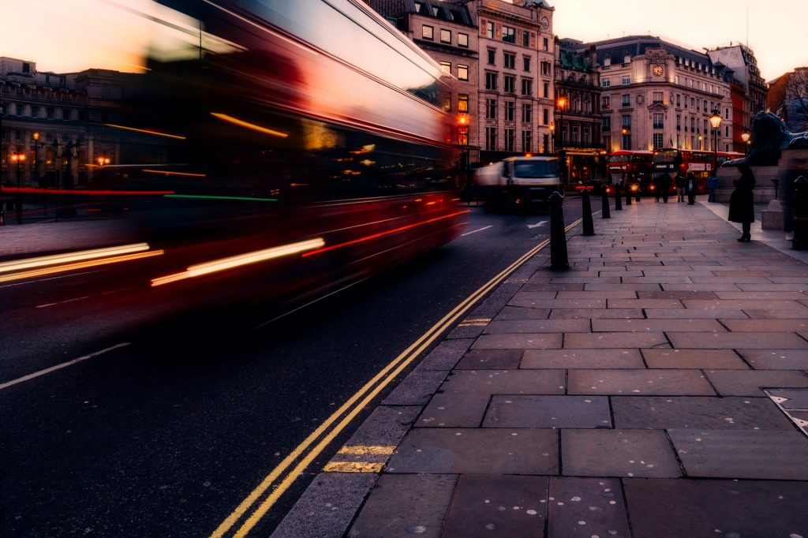

This website is designed by using the knowledge I aquired from the programming
lesson regdarding to the use of html and css effectively.
In this website there is many information about me (Getinet Fikadu)
regdarding my educational life. also in this website you can gett different
informations about construction,buildings, designing, and so on.
if you want to know what is happening regarding to construction technology
across the world you can refer my website.
in this dynamic world you should have awareness about
information and always you have to update your self. unless otherwise it is difficult. in case i
My name is Getinet Fikadu am from Jimma agaro.I was born there and I had finished my prepartatory school one year ago.in those of the last 12 years of academic practice I had added many things in my life.I believe that my today’s appearance, behavior, reflection and life style….are the result of this process. This progress continously makes me on an ongoing process as all of you.
When I had finished my preparatory school, Iprefferd to study in ADDIS ABABA UNIERSITY .and now I am student of ADDIS ABABA UNIERSITY at ETHIOPIAN INSTITUTE OF ARCHITECTURAL BUILDING AND CONSTRUCTION. At this time (feb 2021) am taking a first year common courses for pre-engineering.this happened due to the worldwide pandemic of covid-19. If it had not happened, I would have been second year student. Unfortunately , we all are influenced with it regarding to different perspective. Our social, economic, academic, even our religional practices are also influenced.
However, within a short period of time am going to learn construction technology Management. I want to contribute something practical in real world construction. Being aided with this profession am looking at better future for cities and urban areas. As smart cities developed in one's country the accessibility of necessary situations are simple. In order to achieve this goal, I don't expect my self to set a big and visible contribution. But starting from simple, basic construction go a head....
As you know that in our country there are different difficulties faced the construction and also it is facing still now. Technological materials provision is low, quality of the construction is low.....struggling through these challenges pushing the technology one step up is a great chance . Being wise , active, optimist, problem solver are potentials of talented professionals
this website is about giving information of future construction technologies. there for it's success is making people aware of modern buildings, providing crucial information for proffessionals, assisting others to know about recent smarts and making them for future usage.
This website's vision is
• seeing better awared peoples about future construction.
• seeing actively informed professionals and practice what they are informed.
• assisting simple providence of informtion
The 7 Top Smart Cities Around the World
Right now, we’re in an exciting moment, with new technological breakthroughs happening that change the way we live. Technology is affecting nearly every part of our lives. Even the cities and towns we live in are undergoing major changes to make our everyday lives better, more efficient, and more eco-friendly. You may not have noticed that these changes are happening, but they are - and they’re happening in places all over the globe.
That’s why we’ve rounded up the top smart cities in the world.
New York
The city of New York's Mayor’s Office of Technology Innovation is working with the local city government in order to make the Big Apple a smart city. They consider this to be an equitable city that will help improve life for every single New Yorker. With projects from both the public and private sector, the city is currently undergoing digital transformation to make the government more responsive, save costs, enhance efficiency, and better analyze what’s happening in New York. They’re working with cutting-edge technology to take full advantage of the potential offered by the Internet of Things and connected devices.
Singapore
Singapore has a reputation for being ahead of the curve when it comes to technology, so it’s not surprising that they’re one of the smartest cities around. Its Smart Nation program was launched in 2014, and involved installing lots of sensors around the city. These sensors will pick up a massive amount of information about what citizens do on a daily basis. They can measure everything from how clean a certain area is to how crowded an event is. The government then gets a real-time look at what’s happening in the city.
What makes Singapore’s smart city project stand out is that this data is housed centrally with the government, rather than with an individual company.
London
London’s Office of Technology is working on making sure that London is a smart city. They have multiple projects going on to support innovation and technology at all levels. One way they’re doing this is through the Tech.London partnership, which is aimed at helping entrepreneurs and startups. They also have a Smart London Board that regularly provides updates and recommendations for how the city can be smarter than ever. To achieve their goals, London has a Smart City Plan that includes strategies for how to implement technology in a city that’s expected to grow to 10 million people in the next decade or so.
London is currently working on key issues such as healthcare, transportation, and energy management.
top-smart-cities-london

Barcelona
Barcelona has tons of initiatives happening that consistently land it on lists of the top smart cities. One major project the city has been working on is to have citywide free wifi coverage available. Currently, you can access free wifi nearly everywhere in the city. Local administrations have worked on creating a series of apps to keep citizens informed and engaged in what’s going in. Barcelona also makes good use of Internet of Things technologies, including smart sensors to reduce energy costs and increase road safety.
With all of this in mind, it’s no surprise that Barcelona hosts some of the most exciting tech events around!
Bismart is proud to be one of the companies helping Barcelona become a smart city! Read more about what makes Barcelona is a smart city.
Oslo
Oslo stands out among smart cities for its emphasis on creating a sustainable, eco-friendly environment. While smart cities and sustainable cities are a bit different, Oslo counts as both! This city has over 650,000 LED lights that are all connected to processing stations. These lights can intelligently adjust the amount of lighting based on current needs. But that’s not all. Oslo also uses smart license plate detectors to come up with a data-based way to improve traffic congestion.
The city also has plans to entirely redo its transportation network within the next few years.
Toronto
Watch this space - there are some amazing things happening in Toronto when it comes to smart city projects. The Canadian city is currently being used as a sort of real-life testing lab for some of Google’s most advanced smart city technology through their parent company Alphabet, which runs Sidewalk Labs. Their plan is to develop a waterfront space livable space starting from zero into a tech-focused community. This space totals over 800 acres, and will tackle issues like urban sprawl, climate change, efficiency, and affordability.
The details of this project are still being determined, and city residents are encouraged to participate in the process.
Tokyo
Similar to Oslo, Tokyo is centering much of its smart city policies on being energy smart. The city is working on implementing technology that will help make the city more efficient and environmentally friendly. That includes storing power locally and using electric vehicles. The city has a big challenge ahead of it, as it’s one of the largest cities in the world. Much of Tokyo’s efforts are focused on the year 2020, when the city will host the Summer Olympics.
Keep a close eye on Tokyo to see how it incorporates technology as it prepares to be on the world stage for the sporting event.